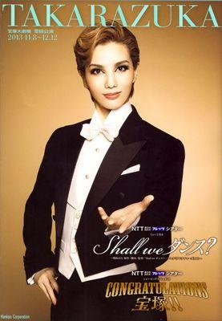

宝塚まとめ
壮一帆
元雪組トップスター
愛称：えりたん、So

元雪組トップスター壮一帆さん。白塗りのよく似合う整ったお顔立ちと、驚くほど長い手足、何よりその迫力の目力には何人ものファンがノックアウトされた と言えよう。特に「カナリア」という演目で演じた悪魔はその天性の美しさを際立たせ、人間非ざる存在として大変印象に残った。 ダンスに関しては、明るめの楽曲よりも、例えば黒燕尾のようなしっとりと色気のあるダンスが非常に似合う。キメごとに客席に送られる目線に 幸運にもぶち当たったファンは、たとえ他の生徒を贔屓にしていようが、浮気して彼女を追ってしまうに違いない。 歌に関しては音やリズムを外しがちだったり得意という印象はないが、撫でるような低温で歌われるバラードは非常に情緒的で、 うっとりと聞き入ってしまう。 蘭寿とむと二人合わせて「まゆえり」と呼ばれるなど、人気の高いタカラジェンヌだった。二番手時代が長く、同期の蘭寿とむがトップになったことからも 就任が難しいと思われていたが、雪組で見事トップに就任された。しかしファンの喜びも束の間、たった３作で退団される。 しかしそのトップ人生は組子に愛され、相手役の愛加あゆ、雪元三番手未涼亜希に愛され、ファンにとっては永遠に愛すべきSoであることは間違いない。